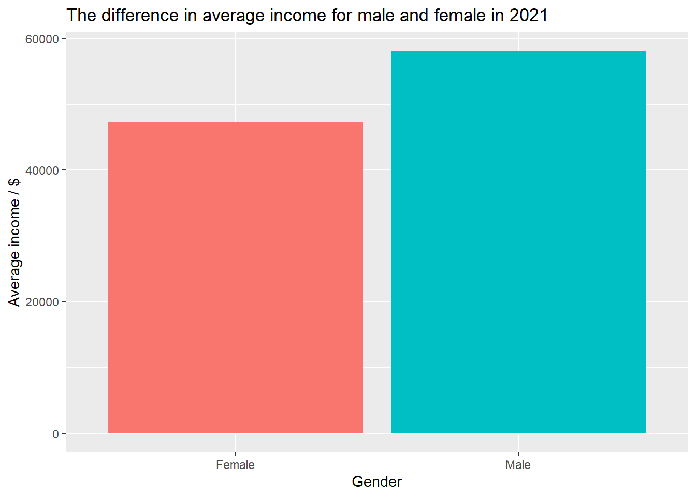
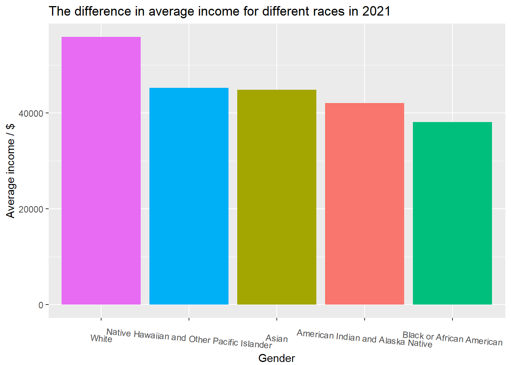
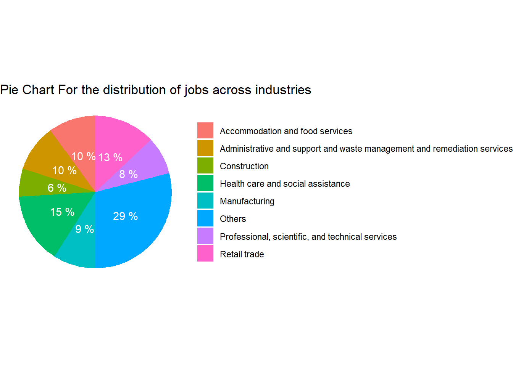
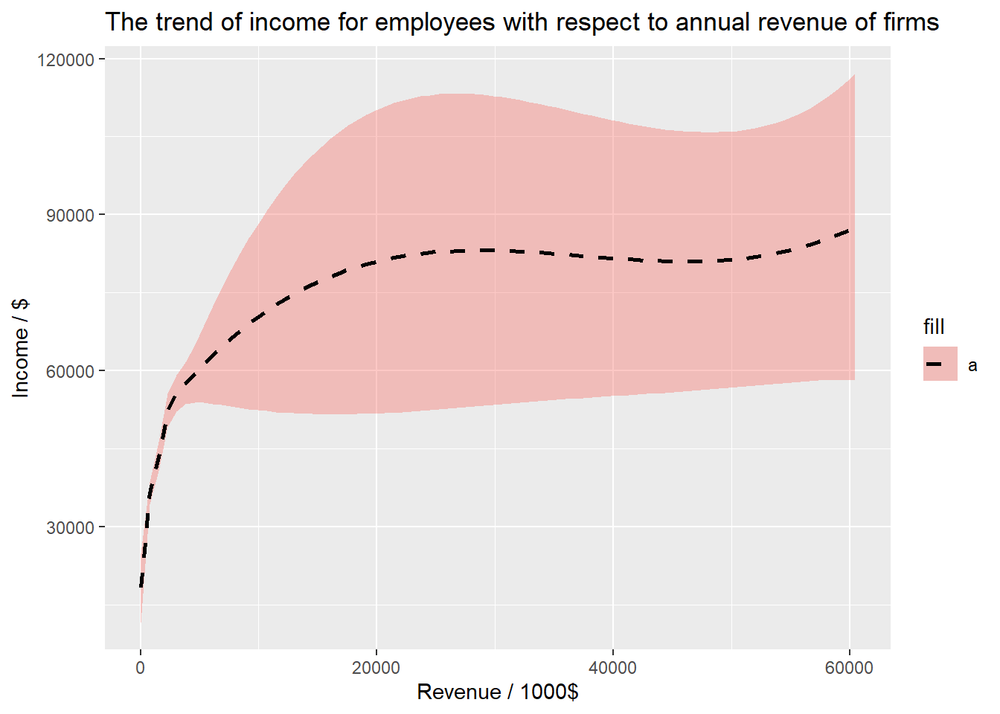

Big Picture
A 538/Upshot style article about the data.
Uncovering Bias: Diving into the makeup of American businesses
The United States is well known for having a diverse, efficient, and opportunistic economic industry. Due to this, the US economy has thrived for the past few decades resulting in political and cultural power over other countries and stability for it’s citizens. Despite this economic growth however, many still question if there is equal opportunity for all kinds of employees based on race, gender, and industry type. Our investigation of the relationship between US census demographics and industry types/economic trends calls attention to if there is inequality for minority groups in the US job industry.
The Basics: Male vs Female
To begin, let’s look at the difference in Male and Female average income in 2021. The figure above illustrates both male and female average income in USD. The results show a sizable difference between the two variables with men earning several thousands more than women.

Income Differences in Race
The next graph illustrates the differences in income based on race. Using various different races such as White, Native Hawaiian and Other Pacific Islander, Asian, American Indian and Alaska Native, and Black or African American, we are able to see clear discrepancies in the average income based on race in 2021. We are able to see that the White group is earning more than 50,000 dollars and more than 10,000 dollars more than the Black or African American group which is the lowest. These results raise questions on whether the US job industry provides equal earning opportunity to all Americans regardless of their race.

What Jobs Are Biggest?
To help provide more information to further investigate the US job industry, we will next look at the population differences for each industry. The pie chart above shows that the “Other” industry has the highest employment while industries such as “Retail trade” and “Health care and social assistance” are the next biggest. This information tells what kinds of jobs US employees are working and can help explain income information.

Equality From Top To Bottom?
Recently there has been major discussions on income for employees relative to how much corporations are making. The graph above shows that corporations do provide slight increases towards employees’ salaries, however, the same corporations are making large increases in their profits. Most income for employees somewhat plateaus in the 80,000 dollar range and salaries only slightly increase to just under 90,000 dollars.
Conclusion
Using the information we have gathered from both data sources and creating the various graphs, we have uncovered that there are still problems in the US economy regarding issues on income equality. We were able to highlight issues on race, gender, and general industry information and found that certain groups such as women and African Americans still lag behind in our job industry.
Reflecting on these results, it becomes more aware that more needs to be done to provide equal opportunities to American families concerning their income earning opportunities. US corporations are still increasing their revenues, however, there are still discrepancies in the “sharing” of this wealth.